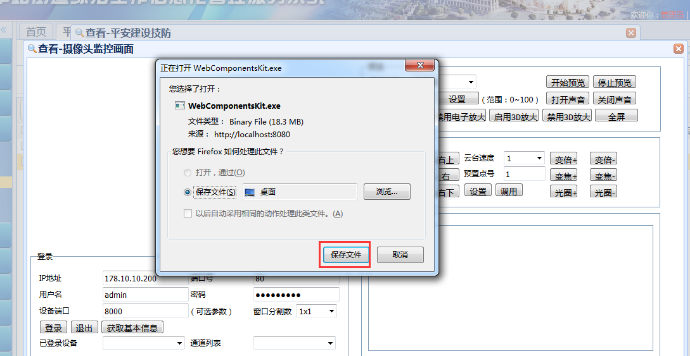

|
操作指南：
1、如何进入监控画面及注意事项。
注意事项：
a）.必须安装插件：WebComponentsKit.exe（点击可直接下载）
b）.仅支持32位浏览器：Firefox30~Firefox51、IE6~IE11、Chrome31~Chrome44、Safari5.0.2+，需要浏览器支持NPAPI。
c）.插件安装完成后，关闭浏览器重新启动后才能生效
点击技防名称,出现下图页面
如已安装插件，点击取消按钮，确认浏览器版本是否正确；如未安装插件，点击确定按钮，出现下图页面

点击保存按钮进行下载插件【这里的下载是以火狐（Firefox）浏览器为例】
上图空色方框内显示下载进度，点击可查看下载详情
点击上图大的红色方框内的下载文件会出现下图安装插件的界面，点击运行按钮进行安装

安装过程中会出现下图警告，选择【允许本次操作】，即可正常安装插件
插件安装完成后，关闭浏览器，从新打开即可正常进入监控画面,第一次进入需要激活插件，点击下图的激活，然后点击本次允许
如遇到下图中浏览器拦截，请点击允许
|